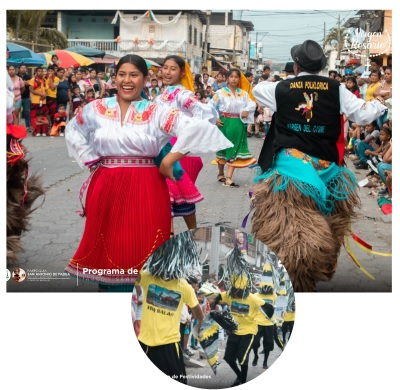

A Balao siempre se lo ha reconocido por alegre y es que siempre en toda fiesta para toda ocasion el baile nunca debe faltar, nuestros bailes folcloricos y danza de curiquingues hace que Balao este lleno de energia positiva y es lo que los danzantes nos demuestran en cada escenario donde nos representan
--------------------------------------------------------- BALAO TOUR -----------------------------------------------------
VER MAS EN:
https://guayas.gob.ec/cantones-2/balao/CONTACTANOS EN:
Facebook:
https://www.facebook.com/alcaldiaciudadanadebalaoUbicanos en:
https://maps.app.goo.gl/vx716a1PSHRRGGQJ6